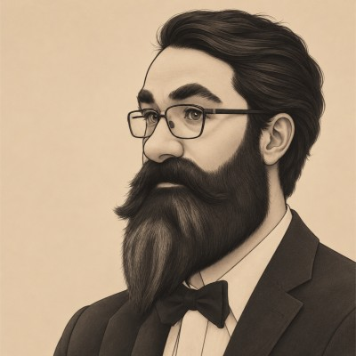

Fikirden
ürüne.
Merhaba, ben Yusuf. Teknoloji, girişimcilik ve iş birliklerinin kesişiminde yeni fikirleri keşfediyorum.
↓
Selimoğlu
Meraktan doğan
çalışmalar.
Decision Recheck
Ürün vaatlerini gereksinimler ve kanıtlarla karşılaştıran açık kaynak araç seti.
IntentWeft
Yapay zekâ ile yapılan kod değişikliklerinde niyet, kanıt ve doğrulama üzerine.
Sheet Sentry
Yapay zekâ düzenlemeleri sonrasında tabloları ve formülleri karşılaştırmak için.
CutOnce
Düzensiz malzemeler üzerinde dikdörtgen kesim yerleşimleri.
Agent Crash Lab
Yapay zekâ iş akışlarında hata ve toparlanma senaryolarını simüle eder.
Handrail
Kullanıcı eylemlerine rehberlik eden bir tarayıcı eklentisi.
Fikirler gelişir, yeni çalışmalar eklenir. Daha fazlası için GitHub profilime göz atabilirsiniz.
Tüm çalışmaları gör ↗Farklı alanların
birlikte açtığı yollar.
Girişimcilik ve ürün yaratmanın yanında teknoloji, yazılım geliştirme, uluslararası ticaret ve stratejik iş birlikleriyle ilgileniyorum. Bu alanları bir araya getiren fikirleri ve yeni bağlantıları önemsiyorum.
Bir fikirle
başlayalım.
Yeni fikirler ve anlamlı iş birlikleri için LinkedIn üzerinden bağlantı kurabilirsiniz.
LinkedIn’de bağlantı kur